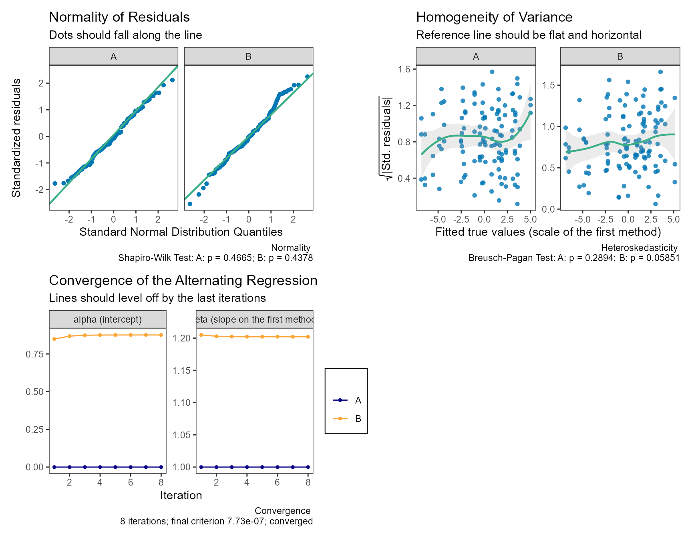
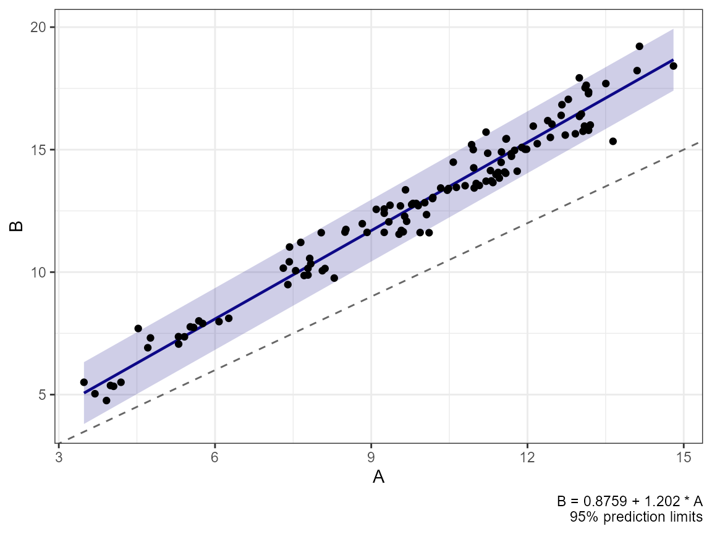
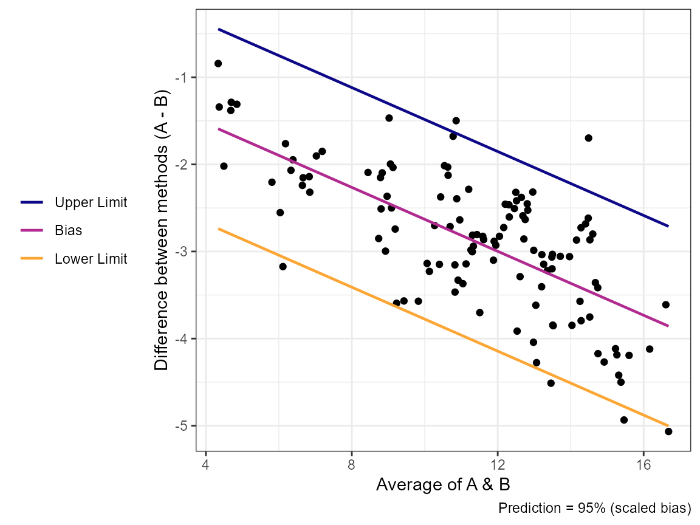
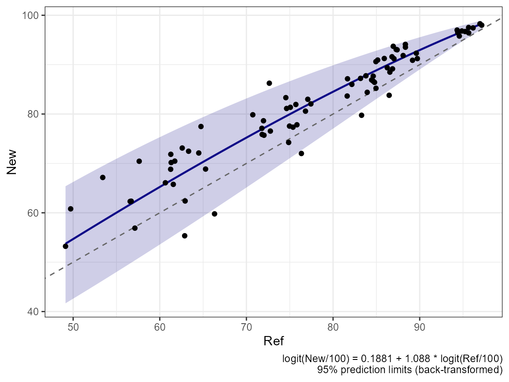

Converting Between Methods
Aaron R. Caldwell
Last Updated: 2026-10-30
Source:vignettes/method_conversion.Rmd
method_conversion.RmdLimits of agreement answer “how far apart are two methods?”. When the
methods do not agree, the next question is often “what would method B
have read, given a measurement by method A?”.
method_convert() estimates conversion
equations between every pair of methods,
\[ y_{\text{to}} = \alpha_{\text{to}|\text{from}} + \beta_{\text{to}|\text{from}}\, y_{\text{from}}, \]
with a prediction SD and prediction limits, under three models for
the bias between methods (Carstensen 2010). The data are in
the long format used by method_vc() (see
vignette("method_comparison_vc")).
We use simulated data throughout. Method B reads about 1 unit higher and 20% steeper than method A (\(\beta_B = 1.2\)), so the bias is not constant:
dat = sim_methods(n_items = 40, n_reps = 3, methods = c("A", "B"),
alpha = c(0, 1), beta = c(1, 1.2),
mu_mean = 10, mu_sd = 3, tau = 0.2,
sigma = c(0.3, 0.5), seed = 101)
attr(dat, "truth")$conversion
#> # A tibble: 4 × 5
#> to from alpha beta sd_pred
#> <chr> <chr> <dbl> <dbl> <dbl>
#> 1 A A 0 1 0.424
#> 2 A B -0.833 0.833 0.586
#> 3 B A 1 1.2 0.703
#> 4 B B 0 1 0.707Constant bias: from a variance component fit
If the bias is constant, the conversion has slope 1 and its intercept
is the bias, so it follows directly from method_vc(). The
prediction SD is the SD of the difference between single measurements,
and, for a method converted to itself, \(\sqrt{2}\sigma_m\) (two measurements by the
same method).
fit_vc = method_vc(dat, y = "y", method = "method", id = "id",
replicate = "repl")
conv_const = method_convert(object = fit_vc)
conv_const
#> Conversion Between Methods: Constant Bias
#> y(To) = alpha + beta * y(From); sd = prediction SD
#>
#> To From alpha 95% CI beta 95% CI sd
#> A A 0.0000 1 0.3747
#> A B -2.8711 [-3.0867, -2.6555] 1 0.8220
#> B A 2.8711 [ 2.6555, 3.0867] 1 0.8220
#> B B 0.0000 1 0.7232
#>
#> From method_vc(): slope fixed at 1; intercept CIs are those of the biasespredict() on the method_vc() fit does the
same thing:
predict(fit_vc, newdata = c(5, 10, 15), from = "A", to = "B")
#> # A tibble: 3 × 4
#> from_value fit lower upper
#> <dbl> <dbl> <dbl> <dbl>
#> 1 5 7.87 6.26 9.48
#> 2 10 12.9 11.3 14.5
#> 3 15 17.9 16.3 19.5Here the constant bias is a poor description:
check(fit_vc) shows the differences changing with the
level.
Linear bias: differences on averages
The classical approach (Bland and Altman 1999; Carstensen 2010, sec. 4.7) regresses the differences \(D = y_1 - y_2\) on the averages \(A = (y_1 + y_2)/2\) for each pair,
\[ D = a + bA + e, \]
and rearranges the fitted line into a conversion equation, \(y_1 = a/(1 - b/2) + y_2 (1 + b/2)/(1 - b/2)\). The prediction limits are the limits of the differences, transformed the same way.
conv_lin = method_convert(dat, y = "y", method = "method", id = "id",
replicate = "repl", pair_seed = 1)
conv_lin
#> Conversion Between Methods: Linear Bias
#> y(To) = alpha + beta * y(From); sd = prediction SD
#> Regression of differences on averages, constant SD of the differences
#>
#> To From alpha 95% CI beta 95% CI sd
#> A A 0.0000 1.0000
#> A B -0.6394 [-1.0718, -0.2070] 0.8249 [0.7910, 0.8587] 0.5480
#> B A 0.7751 [ 0.2816, 1.2686] 1.2123 [1.1625, 1.2621] 0.6644
#> B B 0.0000 1.0000
#>
#> CIs: approximate (delta method, cluster-robust by item)
#> A slope of the differences on the averages can arise from unequal measurement errors alone;
#> see ?method_convertWith replicates, each item contributes several pairs (exchangeable
replicates are paired at random within item; pair_seed
makes this reproducible), so the standard errors are cluster-robust by
item.
If the spread of the differences also changes with the level,
variance = "linear" models the SD of the differences as a
linear function of the average:
method_convert(dat, y = "y", method = "method", id = "id",
replicate = "repl", pair_seed = 1, variance = "linear")
#> Conversion Between Methods: Linear Bias
#> y(To) = alpha + beta * y(From); sd = prediction SD
#> Regression of differences on averages, linear SD of the differences
#>
#> To From alpha 95% CI beta 95% CI sd
#> A A 0.0000 1.0000
#> A B -0.6394 [-1.0718, -0.2070] 0.8249 [0.7910, 0.8587]
#> B A 0.7751 [ 0.2816, 1.2686] 1.2123 [1.1625, 1.2621]
#> B B 0.0000 1.0000
#>
#> CIs: approximate (delta method, cluster-robust by item)
#> Prediction SD depends on the level; SD of the differences:
#> A - B: 0.2283 + 0.0339 * average
#> A slope of the differences on the averages can arise from unequal measurement errors alone;
#> see ?method_convertA caveat. The slope \(b\) is biased whenever the two methods have
different measurement errors, because \(\mathrm{cov}(D, A) = (\mathrm{var}(y_1) -
\mathrm{var}(y_2))/2\): two methods with the same scale but
different precision show a “proportional bias” on this plot. In these
data method B is noisier than A, which pushes \(b\) away from its true value. The scaled
model below, or errors-in-variables regression (dem_reg(),
pb_reg()), accounts for the measurement errors.
The scaled model
The scaled model (Carstensen 2010, ch. 7) assumes that every method measures the same true value \(\mu_i\) on its own linear scale,
\[ y_{mir} = \alpha_m + \beta_m(\mu_i + a_{ir} + c_{mi}) + e_{mir}, \]
with the variance components of method_vc():
method-by-item effects \(c_{mi}\),
item-by-replicate effects \(a_{ir}\)
(linked replicates), and measurement errors \(e_{mir}\) with a separate SD for each
method. The conversion from method \(m\) to method \(k\) is
\[ \beta_{k|m} = \beta_k/\beta_m, \qquad \alpha_{k|m} = \alpha_k - \alpha_m \beta_k/\beta_m . \]
method_convert(bias = "scaled") fits this model by
alternating regression (the default, estimator = "altreg"),
as in MethComp’s AltReg(): it alternates between regressing
each method on the current predicted true values and refitting the
variance component model to the rescaled measurements, until the
conversions stop changing. It needs replicates, to separate the
measurement errors from the method-by-item variation. For confidence
intervals, use the maximum likelihood fit instead
(estimator = "ml"; see below).
conv_sc = method_convert(dat, y = "y", method = "method", id = "id",
replicate = "repl", bias = "scaled")
conv_sc
#> Conversion Between Methods: Scaled Model
#> y(To) = alpha + beta * y(From); sd = prediction SD
#>
#> To From alpha 95% CI beta 95% CI sd
#> A A 0.0000 1.0000 0.3747
#> A B -0.7286 [-1.0634, -0.3939] 0.8319 [0.8064, 0.8573] 0.5355
#> B A 0.8759 [ 0.4994, 1.2524] 1.2021 [1.1653, 1.2389] 0.6437
#> B B 0.0000 1.0000 0.7232
#>
#> CIs: delta method, conditional on the predicted true values;
#> much too narrow (about 55-75% coverage for 95% in simulations);
#> use estimator = 'ml' for intervals; see ?method_convert
#> Alternating regression: 8 iterations, converged (criterion 7.73e-07)
#>
#> Variance components (SD, on each method's scale)
#> Method tau sigma
#> A 0.1334 0.2650
#> B 0.1603 0.5114The slope of B on A is close to the true 1.2. summary()
shows the per-method intercepts and slopes, with the first method as the
reference (\(\alpha = 0\), \(\beta = 1\)); only the conversions between
methods are identified, not the scale of the true values.
summary(conv_sc)$scaled$methods
#> # A tibble: 2 × 3
#> method alpha beta
#> <chr> <dbl> <dbl>
#> 1 A 0 1
#> 2 B 0.876 1.20check() shows the residuals of the final variance
component model (their normality, with Shapiro-Wilk tests, and their
spread against the fitted true values, with Breusch-Pagan tests) and how
the estimates converged:
check(conv_sc)
The conversion plot shows the conversion and its prediction limits with the observed pairs; the dashed line is the line of identity.
plot(conv_sc)
The Bland-Altman plot shows the bias and prediction limits that the model implies for the differences, as lines that change with the level:
plot(conv_sc, type = "ba")
Transformed scales
All three models are fit on the scale set by transform
(see vignette("method_comparison_vc")). The conversions are
then linear on that scale, and predict() and the conversion
plot back-transform the converted value and its prediction limits to the
original scale (Carstensen 2010, ch. 8). For
percentages (e.g., oxygen saturation),
transform = "pctlogit" keeps the conversions and limits
inside 0 to 100:
sat = sim_methods(n_items = 40, n_reps = 2, methods = c("Ref", "New"),
alpha = c(0, 0.15), beta = c(1, 1.1), mu_mean = 1.2,
mu_sd = 0.8, tau = 0.1, sigma = c(0.1, 0.15),
transform = "pctlogit", seed = 7)
conv_sat = method_convert(sat, y = "y", method = "method", id = "id",
replicate = "repl", bias = "scaled",
transform = "pctlogit")
predict(conv_sat, newdata = c(60, 80, 95, 99), from = "Ref", to = "New")
#> # A tibble: 4 × 4
#> from_value fit lower upper
#> <dbl> <dbl> <dbl> <dbl>
#> 1 60 65.2 53.6 75.3
#> 2 80 84.5 77.0 89.9
#> 3 95 96.7 94.8 98.0
#> 4 99 99.4 99.1 99.7
plot(conv_sat, pair = c("Ref", "New"))
Prediction
predict() converts values of one method to another on
the original scale, with prediction limits at any level:
predict(conv_sc, newdata = c(5, 10, 15), from = "A", to = "B",
level = 0.90)
#> # A tibble: 3 × 4
#> from_value fit lower upper
#> <dbl> <dbl> <dbl> <dbl>
#> 1 5 6.89 5.83 7.95
#> 2 10 12.9 11.8 14.0
#> 3 15 18.9 17.8 20.0
predict(conv_sc, newdata = data.frame(B = c(6, 12)), from = "B", to = "A")
#> # A tibble: 2 × 4
#> from_value fit lower upper
#> <dbl> <dbl> <dbl> <dbl>
#> 1 6 4.26 3.21 5.31
#> 2 12 9.25 8.20 10.3Confidence intervals for the scaled model
The intervals from the alternating regression
(ci_method = "delta", the default) use the standard errors
from the final regressions of each method on the predicted true values.
These treat the predicted true values as known, so they ignore part of
the uncertainty and are much too narrow (see the table below).
For intervals, fit the model by maximum likelihood with
estimator = "ml". This treats the true values as normally
distributed (the structural model) and fits the scaled model as a
confirmatory factor model with the lavaan package, which must be
installed. The alternating regression supplies the starting values, and
missing measurements are handled by full-information maximum likelihood,
so the design need not be balanced. The intervals are Wald intervals
with \(t\) quantiles on (items \(-\) 1) degrees of freedom, and the
prediction SDs get intervals too (on the log scale):
conv_ml = method_convert(dat, y = "y", method = "method", id = "id",
replicate = "repl", bias = "scaled",
estimator = "ml")
conv_ml
#> Conversion Between Methods: Scaled Model (maximum likelihood)
#> y(To) = alpha + beta * y(From); sd = prediction SD
#>
#> To From alpha 95% CI beta 95% CI sd
#> A A 0.0000 1.0000 0.3747
#> A B -0.7390 [-1.1815, -0.2964] 0.8327 [0.7990, 0.8663] 0.5326
#> B A 0.8874 [ 0.3906, 1.3843] 1.2009 [1.1524, 1.2495] 0.6396
#> B B 0.0000 1.0000 0.7232
#>
#> CIs: Wald (maximum likelihood, structural model), t with items - 1 df;
#> about 92-97% coverage for 95% in simulations with 15-60 items; see ?method_convert
#> Maximum likelihood (lavaan): 25 iterations, converged; log-likelihood -228.56
#>
#> Variance components (SD, on each method's scale)
#> Method tau sigma
#> A 0.1268 0.2650
#> B 0.1522 0.5114The summary() adds the model’s chi-square test of fit,
RMSEA, and SRMR; a poor fit means that the normal model for the true
values and errors describes the data poorly. With few items (fewer than
about 20), a variance estimate can be zero or negative (a Heywood case);
method_convert() then gives a warning, and the intervals
may be unreliable.
summary(conv_ml)
#> Conversion Between Methods
#> Bias model: scaled
#> Replicates: exchangeable
#> Prediction level: 95%; confidence level: 95%
#> Maximum likelihood (lavaan): 25 iterations, converged; log-likelihood -228.56
#> Model fit: chi-square 9.45 on 20 df (p 0.977), RMSEA 0, SRMR 0.013
#> (a poor fit means the normal model for the true values and errors is questionable)
#> Confidence intervals: Wald (maximum likelihood)
#>
#> Design: number of items by method and number of replicates
#> method 3
#> A 40
#> B 40
#>
#> Pairs of measurements used for each pair of methods
#> pair n_pairs
#> A-B 120
#>
#> Methods on the scale of the first method (y = alpha + beta * mu)
#> method alpha beta
#> A 0.0000 1.000
#> B 0.8874 1.201
#>
#> Conversions
#> to from alpha beta sd_pred alpha_se beta_se df alpha_lower alpha_upper
#> A A 0.0000 1.0000 0.3747 NA NA NA NA NA
#> A B -0.7390 0.8327 0.5326 0.2188 0.01664 39 -1.1815 -0.2964
#> B A 0.8874 1.2009 0.6396 0.2456 0.02400 39 0.3906 1.3843
#> B B 0.0000 1.0000 0.7232 NA NA NA NA NA
#> beta_lower beta_upper sd_lower sd_upper
#> NA NA NA NA
#> 0.799 0.8663 0.4719 0.6011
#> 1.152 1.2495 0.5681 0.7201
#> NA NA NA NA
#>
#> Variance components (SD)
#> component method sd lower upper
#> tau A 0.1268 NA NA
#> tau B 0.1522 NA NA
#> sigma A 0.2650 NA NA
#> sigma B 0.5114 NA NAHow well do the intervals cover? In simulations of the scaled model (true slopes 1, 1.2, and 0.9; 3 replicates; balanced data and normal true values; 500 data sets per setting), the 95% intervals for the conversion slopes covered the true slope this often:
| Items | Methods | Alternating regression, linked | exchangeable | Maximum likelihood, linked | exchangeable |
|---|---|---|---|---|---|
| 15 | 2 | 57% | 66% | 93% | 94% |
| 30 | 2 | 53% | 65% | 94% | 95% |
| 60 | 2 | 54% | 65% | 95% | 94% |
| 15 | 3 | 70% | 73% | 95% | 93% |
| 30 | 3 | 67% | 71% | 94% | 95% |
| 60 | 3 | 64% | 70% | 94% | 95% |
The intercepts were similar. For the alternating regression, more items do not help, because the problem is not the sample size but treating the predicted true values as known; its point estimates were accurate (the slopes essentially unbiased and the prediction SDs within 1% to 2%), so its conversions and prediction limits can be used. The maximum likelihood intervals held up with 15% of the measurements missing and with uniform or skewed true values (92% to 97% coverage across all settings), and the intervals for the prediction SDs covered 92% to 95%. Its prediction SDs are a little low with few items (by 3% to 5% with 15 items), because, unlike the alternating regression, it does not adjust the method-by-item variance for the number of items.
The two fits can give somewhat different estimates on real data, especially when the true values are far from normal. For the oximetry data in MethComp, whose true values are strongly skewed, the slope of pulse on CO is 0.94 by alternating regression and 0.90 by maximum likelihood (95% CI 0.80 to 1.00), and the model’s chi-square test shows a poor fit.
The alternating regression also offers a parametric bootstrap
(ci_method = "boot"): it simulates data from the fitted
model with the observed design, refits the model to each, and reports
percentile intervals, including for the prediction SDs and the variance
components. Each replicate refits the model, so this takes a while (the
default is 999 replicates), and its coverage has not been checked by
simulation:
set.seed(2024)
conv_boot = method_convert(dat, y = "y", method = "method", id = "id",
replicate = "repl", bias = "scaled",
ci_method = "boot", boot_reps = 39)
conv_boot
#> Conversion Between Methods: Scaled Model
#> y(To) = alpha + beta * y(From); sd = prediction SD
#>
#> To From alpha 95% CI beta 95% CI sd
#> A A 0.0000 1.0000 0.3747
#> A B -0.7286 [-0.9516, -0.4583] 0.8319 [0.8099, 0.8566] 0.5355
#> B A 0.8759 [ 0.5651, 1.1272] 1.2021 [1.1674, 1.2348] 0.6437
#> B B 0.0000 1.0000 0.7232
#>
#> CIs: parametric bootstrap percentile intervals (39 of 39 refits used); approximate, coverage not yet evaluated
#> Alternating regression: 8 iterations, converged (criterion 7.73e-07)
#>
#> Variance components (SD, on each method's scale)
#> Method tau sigma
#> A 0.1334 0.2650
#> B 0.1603 0.5114